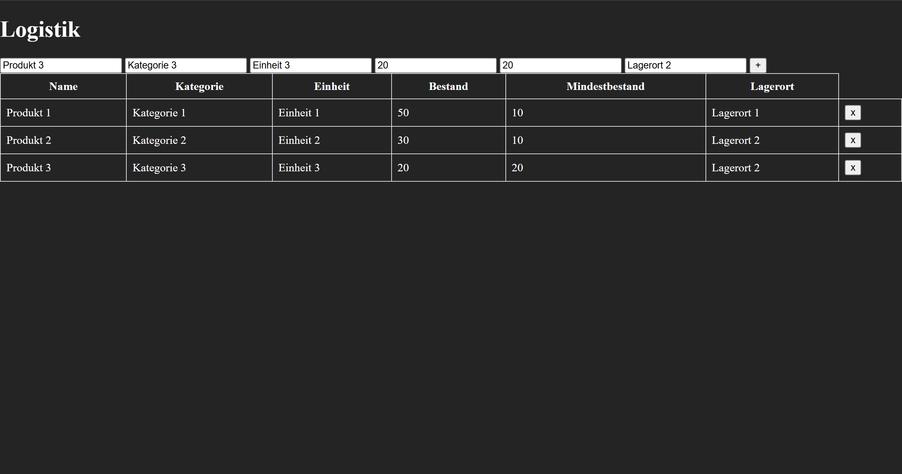
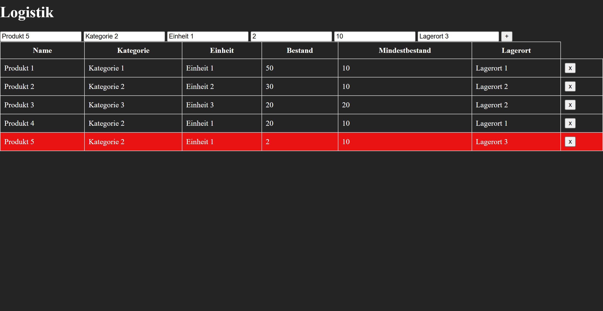

Was die App kann
- Produkte anlegen mit Name, Kategorie, Einheit (z.B. m², Palette, Karton), Bestand, Mindestbestand und Lagerort
- Alle Produkte in einer übersichtlichen Tabelle anzeigen
- Produkte löschen
- Automatische Mindestbestand-Warnung: Sobald der aktuelle Bestand unter den Mindestbestand fällt, wird die Zeile rot markiert – ohne dass der User etwas tun muss

Logistik Web App Übersicht – zum Vergrößern klicken
Wie der Code Funktioniert
Backend (Node.js + Express)
Der Server läuft in server.js und nutzt drei npm-Pakete:
- express – das Web-Framework, das HTTP-Anfragen entgegennimmt und an die richtigen Routen weiterleitet. Es stellt auch express.static() bereit, womit der public/-Ordner direkt ausgeliefert wird, und express.json(), das eingehende JSON-Anfragen automatisch in JavaScript-Objekte umwandelt.
- cors – steht für Cross-Origin Resource Sharing. Ohne dieses Paket würde der Browser Anfragen vom Frontend ans Backend blockieren, weil beide auf unterschiedlichen Ursprüngen laufen. CORS erlaubt diese Verbindung explizit.
- better-sqlite3 – eine synchrone SQLite-Bibliothek für Node.js. Anders als andere Datenbank-Treiber ist sie vollständig synchron, was den Code deutlich einfacher und lesbarer macht – kein async/await nötig auf der Datenbankebene.
Die Routen sind in routes/produkte.js und routes/buchungen.js ausgelagert. Jede Datei erstellt einen Express-Router mit fünf Endpunkten:
| Methode | Pfad | Funktion |
|---|---|---|
| GET | /api/produkte | Alle Produkte abrufen |
| GET | /api/produkte/:id | Ein einzelnes Produkt abrufen |
| POST | /api/produkte | Neues Produkt anlegen |
| PUT | /api/produkte/:id | Produkt aktualisieren |
| DELETE | /api/produkte/:id | Produkt löschen |
Datenbank (SQLite)
In database.js wird beim Start der App automatisch eine Datei lager.db erstellt, falls sie noch nicht existiert. Die zwei Tabellen produkte und buchungen werden mit CREATE TABLE IF NOT EXISTS angelegt – das verhindert Fehler beim Neustart. Die buchungen-Tabelle hat einen FOREIGN KEY auf produkte(id), der sicherstellt dass nur Buchungen zu existierenden Produkten angelegt werden können.
Frontend (Vanilla JS)
Das Frontend kommuniziert per fetch() mit der REST-API. Beim Laden der Seite wird loadProdukte() aufgerufen, die alle Produkte vom Backend holt und dynamisch als Tabellenzeilen ins HTML einfügt. Für jedes Produkt wird geprüft ob bestand < mindestbestand – falls ja, bekommt die Zeile die CSS-Klasse warnung und wird rot markiert. Nach jedem Hinzufügen oder Löschen wird loadProdukte() erneut aufgerufen damit die Tabelle immer aktuell ist.
Entwicklungsprozess – was dabei gelernt wurde
Ursprünglich war geplant, MongoDB als Datenbank zu nutzen und selbst auf einem Proxmox-Homelab zu hosten. Nach der Installation per Community-Script stellte sich heraus, dass MongoDB 8.0 einen Inkompatibilitätsfehler mit dem PVE-Kernel wirft (Linux kernel versions 6.19 and newer), obwohl der tatsächlich verwendete Kernel 7.0.2-pve ist. Verschiedene Workarounds wie das Überschreiben des Kernel-Checks wurden versucht, führten aber zu weiteren Fehlern. Die Entscheidung fiel dann bewusst auf SQLite, da es für ein Projekt dieser Größe die ehrlichere Wahl ist – keine externe Datenbank-Instanz nötig, alles in einer einzigen .db-Datei, und trotzdem vollständig relationale SQL-Syntax mit Foreign Keys.
Ein weiterer Entwicklungsschritt war die Umstellung der Produktanzeige von einfachen <div>-Elementen auf eine HTML-<table>. Da jedes Produkt mehrere Felder hat, war eine Tabelle die sauberere Lösung für die Übersichtlichkeit. Das erforderte eine Anpassung im JavaScript: statt createElement("div") werden jetzt <tr>- und <td>-Elemente erstellt und dynamisch zusammengesetzt.
Mögliche zukünftige Erweiterungen
- Buchungshistorie: Jede Bestandsänderung (Wareneingang / Warenausgang) als Buchung in der buchungen-Tabelle loggen – so entsteht ein vollständiger Verlauf wann welche Menge bewegt wurde
- Bestandsänderung über UI: Statt nur Produkte anzulegen, direkt den Bestand erhöhen oder verringern und die Änderung als Buchung speichern
- Suchfunktion: Produkte nach Name, Kategorie oder Lagerort filtern
- Authentifizierung: Login-System damit nicht jeder Zugriff auf das Lager hat
- CSV-Export: Alle Produkte als CSV-Datei exportieren für die Weiterverarbeitung in Excel oder SAP
- Barcode-Scanner: Per Kamera einen Barcode scannen und das Produkt automatisch identifizieren
- Dashboard: Übersichtsseite mit Statistiken – wie viele Produkte unter Mindestbestand, Gesamtwert des Lagers, etc.

Logistik Web App Übersicht mit mindestbestand Funktion. – zum Vergrößern klicken
Tech Stack
HTML5 · CSS3 · Vanilla JavaScript · Node.js · Express.js · SQLite(better-sqlite3)